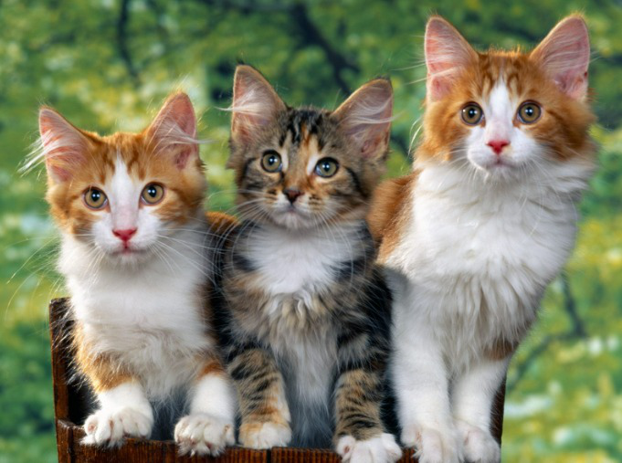
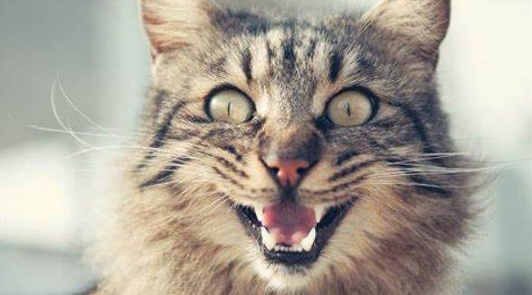
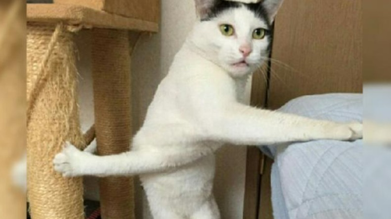

website ini berisikan tentang bagaimana merawat kucing dengan baik dan fakta unik seputar kucing
Cara memberi makan anak kucing sejak berusia empat minggu hingga empat bulan

Pada usia empat minggu, anak kucing Anda akan mulai menunjukkan minat pada makanan padat dan Anda dapat mulai menyapihnya. Lakukan dengan melembapkan kibble kering dengan susu anak kucing atau air sampai mencapai tingkat kelunakan yang tepat sehingga anak kucing Anda dapat memakannya dengan mudah, atau gunakan makanan basah sebagai gantinya. Pilih makanan yang dirancang khusus untuk anak kucing yang akan mendukung , misalnya makanan tersebut harus diperkaya dengan antioksidan untuk merangsang produksi antibodi mereka karena selama penyapihan, kekebalan yang mereka peroleh dari induknya mulai berkurang.
Anda dapat mulai mengatur kebiasaan makan yang baik dengan memastikan bahwa Anda memisahkan area makan, bermain, tidur, dan kotak kotoran anak kucing Anda, sesuai dengan kebiasaan yang mereka lakukan secara alami. Sediakan juga banyak air segar untuk menjaga anak kucing Anda tetap terhidrasi.
Kucing Tidak Bisa Merasakan Manis

Mengejutkan, bukan? Ternyata kucing merupakan hewan mamalia yang tidak bisa mengenali rasa manis. Padahal setiap mamalia memiliki gen yang bisa menerima rasa manis, lho Grameds.
Biasanya hewan mamalia memiliki reseptor di ujung sel perasa bernama T1R2 dan T1R3 untuk merasakan manis. Namun, sel perasa tersebut tidak berfungsi dengan baik pada kucing. Nah, itulah alasan mengapa kucing sebagai hewan mamalia tidak bisa merasakan manis.
Kucing Menghabiskan 70% Hidupnya untuk Tidur

Kucing kerap dijuluki sebagai hewan peliharaan pemalas. Grameds pasti lebih sering melihatnya tidur daripada bermain, bukan? Ya, kucing ternyata bisa menghabiskan waktu hanya untuk tidur selama 15-20 jam per hari.
Wah, lama juga, ya. Mengapa kucing menghabiskan 70% hidupnya hanya untuk tidur? Kucing sebagai hewan predator kecil yang hidup di tengah-tengah manusia membutuhkan tenaga lebih untuk berburu. Tidur menjadi salah satu cara kucing untuk menyimpan energinya.